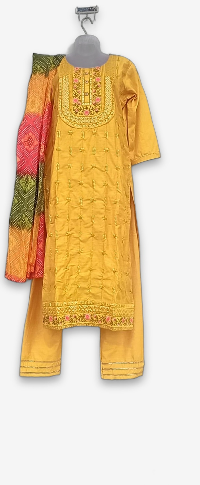
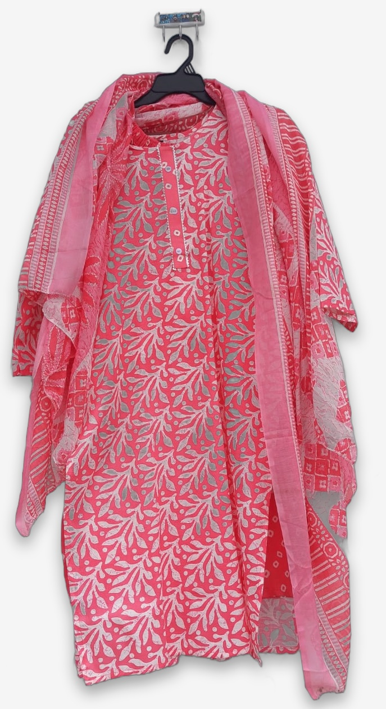
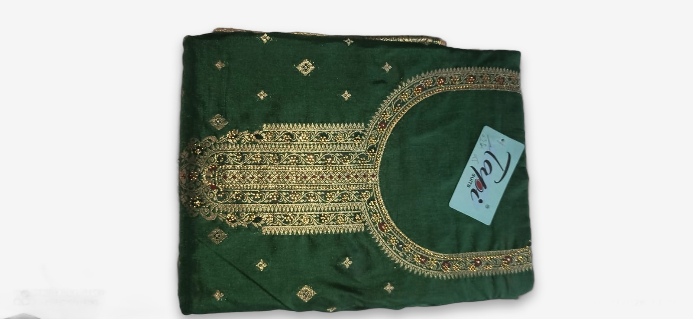
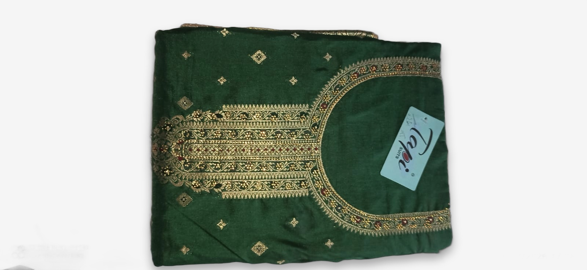

RAW (team photo)

ENGINE ONLY (rembg + tight-crop)

PRO (+ SAM2 hardware removal)

shot1 — mannequin bust
⚠ SAM2 found no separable hardware mask — the bust is fused into the garment mask. Output byte-identical to engine-only. Auto path can't fix this photo class (needs tap-to-fix point prompt or 2-photo technique).
⚠ SAM2 found no separable hardware mask — the bust is fused into the garment mask. Output byte-identical to engine-only. Auto path can't fix this photo class (needs tap-to-fix point prompt or 2-photo technique).
RAW (team photo)

ENGINE ONLY

PRO (+ SAM2 hardware removal)

shot2 — hanger + wall hook
⚠ Same merged-mask limitation — hanger fused into the garment mask; outputs identical. Backdrop swap + watermark removal work, hardware doesn't.
⚠ Same merged-mask limitation — hanger fused into the garment mask; outputs identical. Backdrop swap + watermark removal work, hardware doesn't.
RAW (team photo)

ENGINE ONLY

PRO (+ SAM2 hardware removal)

shot3 — folded on bedsheet
✓ SAM2 detected + inpainted the bottom sheet strip (14,323 px) — output differs from engine-only. But tight-crop already crops that strip, and sheet pixels touching the garment silhouette survive rembg. Auto value here is marginal.
✓ SAM2 detected + inpainted the bottom sheet strip (14,323 px) — output differs from engine-only. But tight-crop already crops that strip, and sheet pixels touching the garment silhouette survive rembg. Auto value here is marginal.